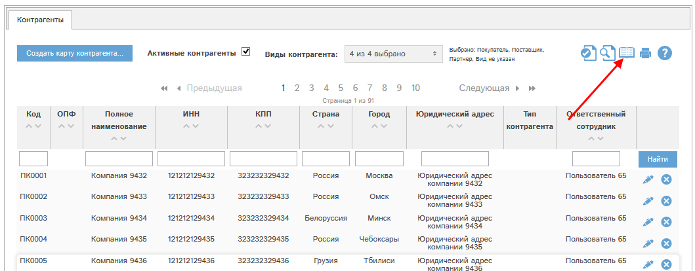

При наличии у Вас соответствующих прав Вам доступен раздел «Коммерческие предложения». В этом разделе показан список доступных вам КП.

Рис. 5.1 Фрагмент окна раздела «Коммерческие предложения».
Фильтр статусов (1) позволяет отфильтровать список КП по статусам:
- Режим «Утвержденные КП» - только КП в статусе «утверждено»
- Режим «Неутвержденные КП» - только КП в статусе «не утверждено».
- Режим «Неактуальные КП» - только КП в статусе «не актуально».
- Режим «Аннулированные КП» - только КП в статусе «Аннулировано»
- Режим «Все КП» - КП со всеми статусами.
Можно выделить несколько статусов, например: КП только в статусах утверждено, неактуально.
Нажатие кнопки  позволяет запомнить в программе выбранные вами
статусы, и когда вы снова зайдете в раздел «Коммерческие предложения», то будут показаны документы
по сохраненному ранее набору статусов.
позволяет запомнить в программе выбранные вами
статусы, и когда вы снова зайдете в раздел «Коммерческие предложения», то будут показаны документы
по сохраненному ранее набору статусов.
Для фильтрации КП по статусу необходимо отметить требуемые статусы и нажать кнопку «Найти» (3).
Кроме того, в списке можно искать КП и сортировать список по полям:
- № КП
- Дата создания
- Срок действия
- Срок поставки
- Вид
- Оборудование
- Производитель
- Контрагент
- Ответственный менеджер
- Кто создал.
Статус КП показан в колонке "Статус" (3). При наличии у Вас соответствующих прав Вы можете утвердить или снять утверждение КП с помощью соотвествующей кнопке в колонке "Утверждение".
С помощью кнопки  у конкретного КП можно просмотреть или
отредактировать данное КП.
у конкретного КП можно просмотреть или
отредактировать данное КП.
С помощью кнопки  можно аннулировать КП.
можно аннулировать КП.
Если кнопка серого цвета - , то аннулировать данное КП невозможно. Это может быть по нескольким причинам:
- У Вас нет прав на аннулирование КП;
- КП не в статусе «не утверждено».
В этих случаях при нажатии кнопки программа выдаст сообщение с перечислением причин, по которым невозможно аннулировать КП.
Настройка колонок реестра
Все основные реестры программы могут быть индивидуально сконфигурированы: вы можете указать, какие колонки и в какой последовательности вы желаете видеть. Всегда можно вернуться к стандартному виду реестра. Рассмотрим работу этой функции на примере реестра контрагентов.
Для настройки реестра нажмите кнопку  :
:

Откроется окно настройки. Слева указаны доступные колонки (1), справа - колонки, которые показаны в реестре (2):

Для перемещения столбцов между блоками 1 и 2 выделите требуемые столбцы (можно выделить несколько столбцов, нажав и удерживая ctrl при их выделении), и нажмите кнопку > для перемещения столбцов из доступных в видимые, либо кнопку < для перемещения из видимых в доступные столбцы.
Доступна сортировка видимых столбцов (в блоке 2). Для того, чтобы поднять или опустить столбец или их группу, выделите требуемые столбцы и нажмите  для подъема или
для подъема или  для спуска столбца.
для спуска столбца.
Для того, чтобы сохранить внесенные изменения, нажмите Готово. Реестр обновится, и будут показаны выбранные вами столбцы в выбранной вами последовательности.
Для того, чтобы восстановить стандартный вид реестра, нажмите кнопку "Сделать стандартными".